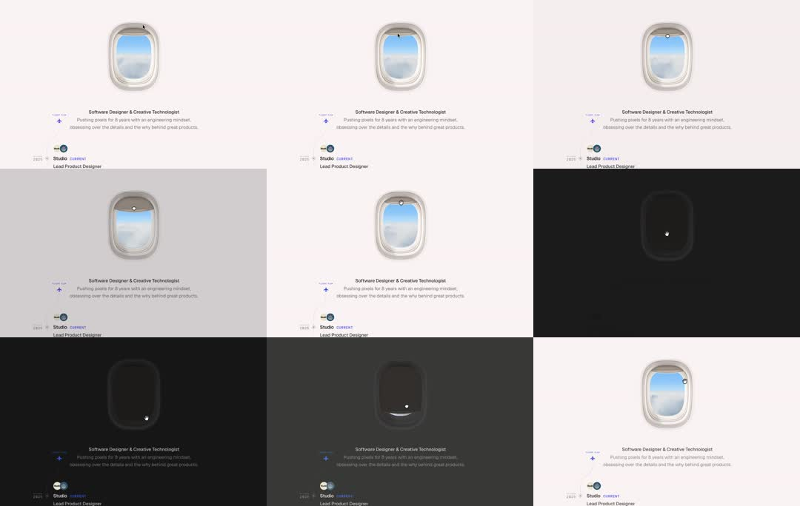

Window-controlled dark mode: a portfolio page topped by a realistic airplane window; dragging the window's shade down physically dims the whole page into dark mode, shade up restores light - a skeuomorphic theme switch.

Build a skeuomorphic shade-controlled theme switch. Top of page: a realistic airplane window (rounded-rect frame ~45% taller than wide, inner sky photo with clouds). The shade is a slightly translucent dark panel clipped inside the window, translateY from -100% (open) to 0 (closed), draggable 1:1 with pointer. Map shadeProgress (0-1) to the page theme: interpolate background (#F7F5F2 -> #0A0A0A), text color, and surface tokens - not a binary class flip but a continuous lerp, so half-shade = half-dark page. Below 0.5 keep light-mode elevation shadows; above, swap to dark-mode glows. Tap toggles with a 600ms ease-in-out flight of the shade. Detail sells it: the shade's bottom edge has a 2px highlight and soft shadow, and the sky photo slightly parallaxes while dragging. Persist the final state; honor system theme as the initial shade position.